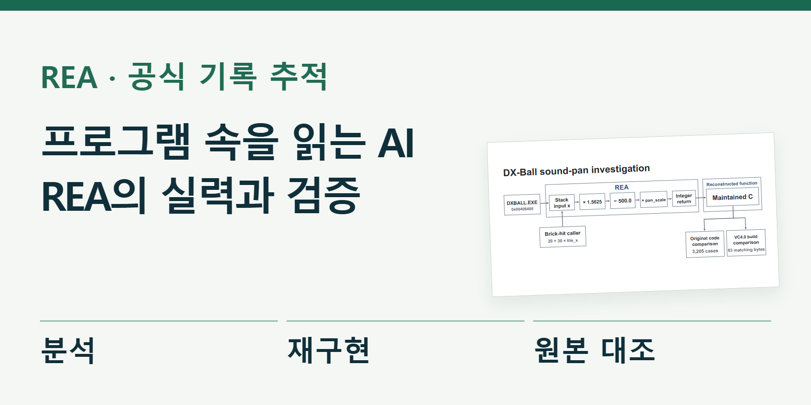
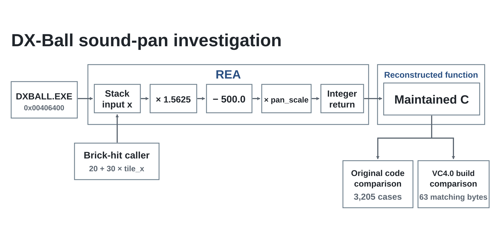

REA, AI가 프로그램 속을 읽는 방법
설계도인 소스 코드가 없는데도, AI가 프로그램의 실행 파일을 읽고 그 기능을 다시 만들 수 있을까. 공개 도구 REA는 이 일을 돕는다. 완제품을 통째로 복사하는 마법은 아니다. AI가 분석 도구를 사용해 근거를 찾고, 작은 기능을 새 코드로 구현한 뒤 원본과 비교하도록 연결한다. REA 공식 저장소

이번 기획은 화제가 된 소개 영상에서 출발했지만, 성과를 판단할 때는 공식 사례와 실제 개발 기록까지 내려가 확인했다. 오래된 게임의 소리가 좌우 어디서 들릴지 계산하는 기능, Notion에서 복사한 내용이 클립보드로 가는 경로, 검사에 합격했는데도 틀렸던 숫자가 핵심 사례다. 성공 장면만큼 그 결과를 어떻게 확인했는지가 중요하다.
REA는 새 AI 모델이 아니라 분석 도구를 잇는 연결 장치다
보통 코딩 AI에게 낯선 프로그램을 보여 주면 설명할 자료부터 필요하다. REA는 AI가 실행 파일 안의 함수, 기계 명령, 그 함수가 부르는 다른 함수, 저장된 숫자를 찾아보도록 돕는다. 함수는 프로그램 안에서 한 가지 일을 맡는 작은 코드 묶음이다. 처음 답이 불완전하면 다른 근거를 조회하는 작업을 이어 갈 수 있다.
실제 분석에는 Ghidra, Hopper 같은 별도 프로그램이 쓰인다. REA는 이 도구의 결과를 AI가 다룰 수 있는 형태로 전달한다. MCP는 AI와 외부 도구를 연결하는 규약이고, CLI는 명령어로 도구를 쓰는 방식이다. REA가 둘을 지원한다고 해서 분석 엔진이나 AI 이용료까지 모두 포함되는 것은 아니다.
대상에 따라서 조사 방식도 달라진다. 윈도 실행 파일에서는 기계 명령을 읽는 과정이 필요하다. 반면 JavaScript로 만든 앱에서는 배포된 코드와 파일 구조, 프로그램 구성 요소 사이의 호출을 추적할 수 있다. 똑같이 ‘앱을 분석한다’고 해도 항상 같은 엔진이나 설치 과정이 필요한 것은 아니다. 실행 파일 안내 · JavaScript 안내
벽돌을 깬 위치에서 소리 방향을 찾아낸다
공식 DX-Ball 사례는 1996년 게임의 기능을 C 코드로 복원한다. 여기서는 벽돌을 깬 위치에 따라 소리의 좌우 방향을 계산하는 함수 하나를 살펴본다.
처음 읽기 좋게 풀어 쓴 코드에서는 입력값이 빠져 있었다. AI는 원래 기계 명령과 비교해 차이를 발견하고, 호출 코드와 상수가 저장된 위치를 더 확인했다. REA의 단계별 원본 사례
그렇게 확인한 계산은 가로 위치에 1.5625를 곱하고 500을 뺀 뒤, 설정된 배율을 적용하는 것이었다. 배율이 1이면 왼쪽 끝 0은 −500, 가운데 320은 0, 오른쪽 끝 640은 500이 된다. 아래는 이 계산을 이해하기 위한 설명 자료다. 실제 게임을 여기서 실행한 화면은 아니다.
이 사례의 의미는 그럴듯한 함수를 써냈다는 데 있지 않다. 처음 보인 설명을 그대로 믿지 않고 입력, 호출 관계, 원본 숫자를 더 찾아 빈 부분을 채웠다는 데 있다. 실제 분석에서는 이렇게 서로 맞지 않는 단서를 발견했을 때 다음 질문을 정하는 일이 중요하다.

‘같다’는 말도 두 종류로 나눠 검사했다
첫 검사는 같은 입력에서 같은 결과가 나오는지 보는 것이다. 공개된 검사 기록은 원래 x86 기계 코드를 실행한 값과 새 C 코드의 값을 직접 비교한다. 소리 계산에서는 0부터 640까지의 정수 위치 641개에 다섯 배율을 적용해 3,205개 경우를 확인했다. 실제 게임의 소리 출력이나 모든 예외 상황까지 검사한 것은 아니다. 3,205개 검사와 제외 범위
두 번째는 새 코드를 실행 파일로 바꿨을 때 기계 명령까지 같은지 보는 검사다. 이 소리 함수는 지정한 옛 컴파일러 환경에서 63바이트 전체가 일치했다. 컴파일러는 소스 코드를 기계가 실행할 형태로 바꾸는 프로그램이다. 비교 과정에는 주소가 달라지는 부분의 처리와 참조하는 상수 확인도 포함된다. 컴파일 결과 비교 기록
결과가 같다는 검사와 기계 명령까지 같다는 검사는 서로 다른 증거다. 전자는 시험한 입력에서의 행동을, 후자는 정해진 환경에서 해당 함수 전체의 코드 일치를 확인한다. 둘 다 중요하지만 함수 하나의 성공이 전체 프로그램의 모든 화면과 예외 처리까지 같다는 뜻은 아니다.
10월 7일자로 고정된 진행·검사 기록에는 유지보수 중인 C 함수 55개, 원본과의 직접 비교 45,380건, 기계 명령까지 일치한 함수 33개가 적혀 있다. 이는 10월 18일 현재의 실시간 집계가 아니다. 해당 기록에서 공과 패들의 물리, 특수 아이템, 윈도 통합을 포함한 완성 게임 작업은 남아 있었다. 날짜가 고정된 진행표 · 45,380건의 집계와 제외 범위
분석기가 잠정적으로 찾은 함수 후보 528개를 분모로 삼아 55개를 ‘완성률’로 계산하는 것도 적절하지 않다. 후보에는 게임 자체 코드 외에 공통 실행 환경이나 라이브러리 코드가 섞일 수 있다. 시험 횟수, 복원한 함수 수, 플레이 가능한 완성도는 각각 따로 읽어야 한다.
검사에 합격했는데 틀린 숫자가 남았다
다른 재구현 프로젝트의 개발 회고에는 더 중요한 반례가 나온다. 동방 프로젝트 게임 TH08의 아이템 자동 수집 동작에서 128.0이어야 할 값이 0.0으로 남았는데도 기존 검사를 통과했다. 검사기가 코드에서 참조하는 주소는 맞춰 봤지만, 그 주소에 들어 있는 실수 값까지 확인하지 못했던 것이다.
개발자는 코드와 검사기를 함께 고친 뒤 관련 참조 1,548개를 다시 살폈고, 이미 받아들인 다섯 함수에서 잘못된 참조 12개를 찾았다고 기록했다. 이후에는 일부러 잘못된 값을 넣었을 때 검사가 실패하는지도 시험했다. 정답에 합격 표시를 붙이는 것뿐 아니라, 오답을 확실히 떨어뜨리는 검사인지까지 확인한 셈이다. 원래 값으로 고친 변경 기록 · 1,548개 참조 후속 점검
이 회고는 개발 참여자의 기록이며 편집부가 같은 환경에서 재실행한 결과는 아니다. 또한 기존 사람들의 복원 작업 위에서 이어진 프로젝트다. 처음부터 AI 혼자 며칠 만에 전체 게임을 만들었다고 소개하면 앞선 기여와 검증 과정을 지우게 된다. 개발자의 성공·실패 회고
이 오류를 REA 하나가 모든 기능을 잘못 분석했다는 증거로 읽을 필요도 없다. 핵심은 AI, 새 코드, 검사 도구가 함께 있어도 검사 범위가 비어 있으면 오류가 남는다는 점이다. 최종 사용 장면에서 이상을 발견하고, 왜 검사가 놓쳤는지 고치는 작업까지 개발의 일부다.
Notion의 복사 기능은 어디까지 밝혔나
Notion 사례는 다른 종류의 분석이다. REA는 데스크톱 앱 7.6.1의 배포 파일에서 복사 요청이 어떤 길로 흐르는지 조사했다. 페이지가 요청을 보내고, 중간 연결 코드가 이를 전달하고, 메인 프로세스가 보낸 페이지를 확인한 뒤 운영체제 클립보드에 글과 HTML을 쓰는 경로다. 공식 Notion 조사
- 페이지에서 복사 요청글과 HTML을 전달
- 앱 내부 통로같은 채널 이름으로 연결
- 보낸 페이지 확인메인 프로세스가 요청 검사
- 클립보드에 기록Electron의 기능 호출
공식 사례는 블록 구조가 붙여넣기에서 유지되는 이유도 별도 저장 자료로 설명한다. HTML의 ID와 로컬에 보관한 블록 정보를 맞춰 구조를 되살리는 방식이다. 다만 이 부분은 7월 13일에 저장한 웹 자료에서 추출한 모듈 시험이다. 현재 앱의 모든 붙여넣기 동작을 촬영한 결과와는 구분해야 한다.
이렇게 클라이언트의 특정 기능을 이해할 수 있다고 해서 Notion의 서버 코드, 동기화 서비스, 계정 체계 전체를 얻는 것은 아니다. 독자가 눈여겨볼 변화는 ‘노션 복제품 완성’보다, 압축된 배포 코드에서도 어떤 요청이 어느 기능으로 이어지는지 근거를 붙여 추적할 수 있다는 점이다.
화제가 된 다른 앱까지 REA의 성과로 묶으면 안 된다
소개 영상에는 Steam, ArtCraft, TradingView 같은 이름도 등장한다. 그러나 각각의 제작 기록에서 REA 사용 여부와 구현 범위가 확인돼야 그 도구의 성과로 소개할 수 있다. 이번에 확인한 자료만으로는 이 세 이름을 ‘REA가 완전히 복제한 상용 서비스’라는 증거로 사용할 수 없다.
특히 ArtCraft의 PhotoCraft 공식 저장소는 공개 규격과 관찰한 동작을 바탕으로 만든 독립 재구현이라고 설명한다. 동시에 아직 초기 알파이며 전문 작업에서 Photoshop을 대체할 상태가 아니라고 명시한다. 메뉴가 명령에 연결돼 있다는 것과 실제 행동이 완전히 같다는 것도 다르다고 구분한다. 이를 곧바로 ‘포토샵 전체 복제 완료’라고 표현하면 제작자의 설명보다 앞서 나간다. PhotoCraft의 현재 상태 설명
이 차이는 사소한 단서가 아니다. 비슷한 화면, 특정 기능의 재구현, 같은 입력의 결과 일치, 실무에서 원제품을 대체할 수 있는 완성도는 차례로 더 큰 주장이다. 기사나 영상에서 보여 주는 증거가 어느 단계에 해당하는지를 함께 밝혀야 실제 변화의 크기가 보인다.
써 보려면 작은 질문과 허용된 파일부터
첫 시험은 ‘이 프로그램을 전부 다시 만들어 줘’보다 ‘내가 만든 앱의 내보내기 버튼이 어느 파일을 쓰는지 근거와 함께 찾아 줘’가 적합하다. REA의 공식 JavaScript 안내에는 여섯 파일로 된 작은 Electron 예제가 있다. 버튼에서 요청이 출발해 중간 연결을 거치고 CSV 파일을 쓰는 곳까지 따라가는 예제다. 앱을 실제 실행하지 않는 정적 분석과 실행 중 관찰은 구분한다.
정적 분석은 파일을 읽어 구조를 살피는 방식이다. 이름을 실행 중에 조합하거나 수신자가 여러 곳이면 정적 정보만으로 결론을 못 낼 수 있다. 공식 가이드도 이 한계를 남긴다. 모르는 부분을 억지로 채우기보다 어느 단계의 근거가 빠졌는지 보여 주는 결과가 더 쓸모 있다. 공식 연습 예제와 한계
설치는 한 번의 복사·붙여넣기로 설명하기보다 현재 배포판, Node.js 버전, 연결할 AI, 필요한 분석 엔진을 나누어 확인해야 한다. 10월 18일 npm 공식 레지스트리에서 확인한 배포판은 rea-agents 6.7.0이었다. Node.js 조건은 22.19 이상인 22 계열, 24.11 이상인 24 계열, 또는 26 이상이다. 23이나 25도 무조건 된다는 뜻이 아니다. 확인한 배포 정보
프로젝트의 변경 기록에는 6.6.0은 태그만 만들었고 npm에는 배포하지 않았으며 해당 변경을 6.7.0에 포함했다고 적혀 있다. GitHub에 번호가 보이는 것과 실제 설치되는 배포판이 같지 않을 수 있다는 작은 사례다. 설치 안내는 AI 클라이언트 설정 변경과 백업, 분석 엔진 준비도 따로 설명한다. 변경 기록 · 설치 조건
무료 도구와 무료 작업은 다르다
REA 자체는 MIT 라이선스의 공개 소프트웨어다. 그러나 연결한 AI의 구독·API 비용, 선택한 상용 분석 도구, 시험 환경을 준비하는 시간은 별도다. 작업량과 모델, 반복 횟수에 따라 달라지므로 ‘앱 하나 복원에 얼마’라는 보편적인 금액은 현재 자료만으로 제시할 수 없다. 비용 비교는 같은 대상과 완료 조건을 정한 실제 작업 기록이 있어야 의미가 있다.
파일 분석이 로컬에서 이뤄져도 결과를 받은 AI가 외부 서비스라면 코드 조각과 분석 정보가 그쪽으로 전달될 수 있다. ‘로컬 분석’과 ‘자료가 기기 밖으로 전혀 나가지 않음’은 같은 조건이 아니다. 회사 프로그램을 맡기기 전에는 사용 권한뿐 아니라 자료 전송 정책도 확인해야 한다.
REA의 안전 안내는 분석 과정이 사용자의 권한으로 파일을 처리하며, 보안 격리 환경을 대신하지 않는다고 명시한다. 출처가 불분명한 실행 파일을 일상 업무용 PC에서 바로 실행하는 실습은 피해야 한다. 권한 있는 파일을 읽는 분석과 프로그램을 실제로 실행하거나 바꾸는 작업을 따로 승인하고 기록하는 편이 안전하다. 보안 경계
도구의 MIT 허락이 분석 대상의 저작권이나 이용 약관까지 바꾸지는 않는다. 공식 고지도 권한 있는 연구·상호운용성·보존 목적을 설명하면서, 보호 장치 우회나 독점 코드·자산의 무단 복제와 구분한다. 대상 파일을 갖고 있다는 이유만으로 어떤 분석·배포든 허용된다고 단정해서는 안 된다. 공식 이용 고지
진짜 변화는 분석하고 검증하는 일을 이어 간다는 것
REA에서 눈여겨볼 것은 AI가 한 번에 맞히는 답보다 조사 과정이다. 설명이 빠진 입력을 찾고, 함수를 부르는 코드를 따라가고, 원본 숫자를 읽고, 새 구현을 비교한다. 틀렸다면 코드뿐 아니라 검사 방법도 고친다. 이런 반복이 쌓여야 사람이 이어서 관리할 수 있는 결과가 된다.
오래된 사내 프로그램의 동작을 이해하거나 파일 형식의 호환성을 조사하는 일에는 이 접근이 도움이 될 여지가 있다. 반대로 복잡한 상용 서비스를 버튼 한 번에 얻는다는 기대에는 거리가 있다. 이번 기록이 보여 주는 성과는 ‘무엇이든 복제’보다 ‘근거를 남기며 기능을 조사하고 재구현하는 작업의 확대’에 가깝다.
확인 범위: 공식 문서·공개 코드·고정된 검사 기록·npm 배포 정보를 대조했다. 편집부 PC에 REA를 설치하거나 게임·Notion 분석을 재실행하지는 않았다. 소개 YouTube 영상은 제목·설명·목차를 확인했으며 전체 발언의 자막은 확보하지 못했다. 따라서 영상의 모든 주장을 검증했다고 표시하지 않았다.
출처와 더 읽을 자료
- REA 공식 저장소
- DX-Ball 실제 조사 과정
- DX-Ball 고정된 진행 기록
- 원본 대조 검사 범위
- 컴파일 결과와 상수 검증
- TH08 오류와 검사기 수정 회고
- Notion 복사 경로 분석
- JavaScript 공식 연습 예제
- 설치 안내
- 현재 npm 배포 정보
- 변경 기록
- REA 보안 안내
- REA 이용 고지
- PhotoCraft 공식 현황
- 취재 출발점: AI슬래시 소개 영상
- DX-Ball 소리 계산·3,205개 시험의 정확한 범위
- TH08 자동 수집 128.0 복원 원본 변경
- TH08 1,548개 참조 점검과 12개 수정
대표 이미지는 제품명과 기사의 핵심을 편집부가 배치한 설명용 표지이며 실제 제품 화면이 아니다. 표지와 본문의 REA 조사 도식은 공식 MIT 자료를 원본 비율로 사용했고 저작권·허락문을 함께 제공한다. 본문의 원본 화면·영상은 각 자료 아래에 출처와 제공 주체를 표시했다. 직접 실습하지 않은 회사 시연을 편집부의 실행 결과로 표시하지 않았다.